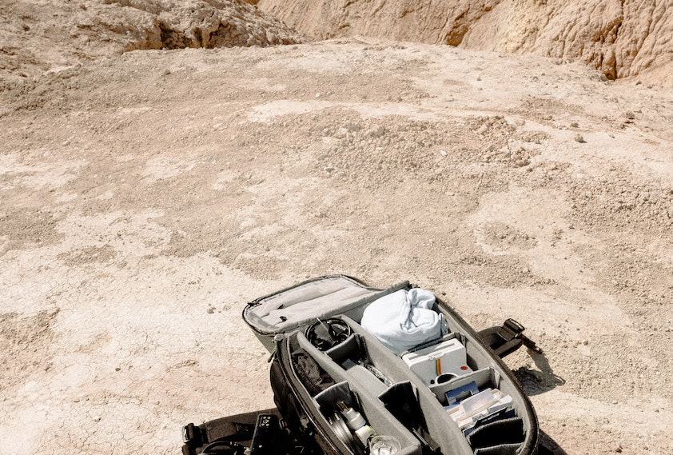

If you are interested and considering continuing photography in the future, it is important to note how it may benefit you career wise. The page discuses the main photography careers many people pick from and other future advice related to photography. Photography offers a diverse range of career paths, allowing individuals to pursue their passion for capturing images in various professional settings.
A photojournalist is a professional photographer who captures and tells stories through images, primarily for news organizations, magazines, or other media outlets. They use their skills in visual storytelling to document and report on various events, issues, and subjects of public interest. The role of a photojournalist goes beyond simply taking photographs. They are responsible for researching and understanding the stories they cover, making ethical decisions about what to capture, and ensuring accuracy and integrity in their work. They often work closely with reporters and journalists to collaborate and create comprehensive multimedia stories.
A commercial photographer is a professional photographer who specializes in creating images for commercial purposes. They work in collaboration with businesses, advertising agencies, marketing teams, and other clients to produce high-quality photographs that promote products, services, brands, or concepts. Commercial photographers have a keen understanding of marketing and branding strategies, and they use their expertise to capture images that effectively communicate the desired message and appeal to the target audience. Their work often involves creating visually compelling images that showcase products, highlight features, and create a desirable image for the client's brand.
A studio photographer is a professional photographer who specializes in capturing images within a controlled studio environment. They work in a dedicated studio space equipped with professional lighting equipment, backdrops, and props to create a controlled setting for their subjects. Studio photographers have the ability to meticulously control lighting, allowing them to shape and sculpt the light to achieve desired effects and enhance the appearance of the subject. They can use a variety of lighting techniques such as key lighting, fill lighting, and rim lighting to create depth, highlight specific features, and create the desired mood or atmosphere.
Making photography a part-time job can be an excellent way to pursue your passion for photography while maintaining a flexible schedule or balancing other commitments. Keeping photography as a side hobby as it's in interest is still beneficial. There can still be small side profit with each photo you take. Publishing your photos on an online stock image websites can provide a profile and profit. For young people it is important to note that many people use photography for their social media. For teenagers social media is usually a part-time hobby or activity many pursue for fun. Continuing Photography as a hobby is still acceptable as it does not need to be in your portfolio or as a caree. It should be done as a fun hobby.
To take photography further experiment with the variety of styles of photography and try learning multiple togerther and understand their roles and importances. Furthermore, try out and utilise the different techniques and skills of photography to improve on your original photograph. Try creating unqiue artistic intentions when planning out your images to show a meaning behind it. The appearance of the image isn't all that matters. There is a lot more to learn about photography with different angles and positioning of a subject. There is many opportunities in the UAE regarding photography competitions.
